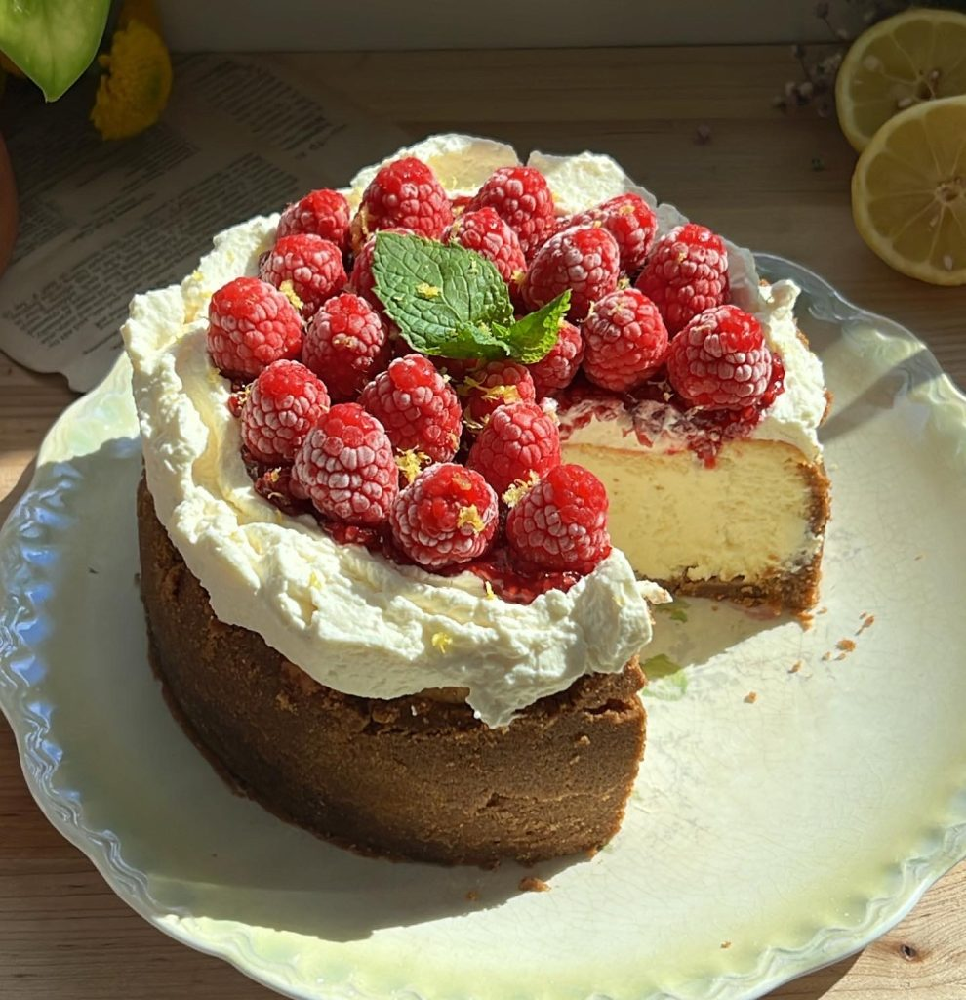

Raspberry Cheesecake


PREP: 35 min

Cook: 2 hours

Servings: 8 Slices

Rating: 5/5
Ingredients
Crust
- 16 sheets Graham crackers
- 12 tbsp Unsalted butter
- 2 tbsp Sugar
- 1/2 tsp Salt
Cheesecake
- 20 oz Cream cheese
- 1/2 cup Sugar
- 1 tbsp Corn starch
- 1/4 tsp Salt
- 1/4 cup Sour cream
- 2 tsp Vanilla extract
- 2 Eggs
Whipped Cream
- 1 1/2 cups Heavy whipping cream
- Powdered sugarr
- 1/4 tsp Salt
Raspberry Jam
- 4 cups Raspberries
- 1 cup Sugar
- 2 tbsp Lemon juice
Toppings
- Zest of half a lemon
- Fresh mint leaves for decoration
Instructions
Crust
- In a large mixing bowl using a hand or stand mixer with the whisk attachment, whisk your cream cheese until smooth.
- Add in your sugar, salt, and cornstarch. Whisk until smooth.
- Scrape down your bowl, and whisk in your sour cream and vanilla.
- Finally, Whisk in your eggs one at a time. Whisk until combined, don't over-mix your batter!
- Scrape down your bowl once more to make sure everything is well combined.
- Pour your batter into your cooled crust and spread evenly.
Waterbath, Option One
- Bring a kettle or saucepan of water to a boil.
- Wrap springform pan in two layers of heavy-duty aluminum foil.
- Add, and bake your crust per instructions. Add cheesecake filling once cool.
- Take your unbaked cheesecake and place in a roasting pan. Transfer your roasting pan to an oven rack.
- Pour your boiling water into the roasting pan until it reaches about halfway up the sides of the springform pan.
Waterbath, Option Two
- Bring a kettle or saucepan of water to a boil.
- Transfer a roasting pan to the bottom rack of your oven.
- Transfer the unbaked cheesecake to the middle rack of your oven, just above the roast pan.
- Carefully pour the boiling water into the roasting pan.
Bake
- Shut the oven door as soon as you carefully pour the boiling water in your roast pan. We want to keep as much steam in the oven as possible.
- Bake at 350°f for 60-75 minutes until your cheesecake is slightly puffed and golden. The center of your cheesecake will have a slight jiggle when nudged.
- Allow to cool at room temp for two hours.
- After two hours, wrap with saran wrap, and pop your cheesecake in the fridge overnight.
- After sitting in the fridge overnight, it should be quite easy to remove your cheesecake from the bottom of your springform pan.
- Very Gently, wiggle a butter knife between the bottom of your pan and the cheesecake to lift the crust a bit. Then gently lift your cheesecake off of your pan.
Toppings
- The following morning, prepare your toppings.
- Whipped cream: In a mixing bowl with either a stand or hand mixer, whip your whipped cream mixture until soft peaks form.
- Jam: In a pot, add your raspberries, sugar and lemon juice. Bring to a boil while continuously mixing with a wooden spoon. Simmer for 20 minutes while continuously mixing to ensure that your jam doesn't burn on the bottom of your pot.
- Plop your homemade whipped cream on the top of your cheesecake. Spread evenly.
- Spread on a hefty amount of raspberry jam once cooled.
- Decorate with some fresh raspberries & top with lemon zest.
- Slice into about 8-10 pieces, and you're done!